渭涇分明，水浪滔天；雪原浩渺，谷壑飛雲。 美國史坦福大學中文系教授莊因，以蔣渭水的名及「雪谷」字號所作的對句。首句表明蔣渭水漢族與日本不兩立之志節，次句述其大義凜然，後人景仰；第三句形容蔣渭水坦蕩胸懷，民族浩氣，似皚皚雪源之廣瀚，末句尊崇蔣渭水萬壑雲起之器度。 大時代與蔣渭水 這段話是一本研究專著的引言。50年過去了，高聳的碑石旁，已擠滿了各式各樣的墳墓，周圍的雜草樹木也終於高過了蔣渭水先生的墓碑，若不經人指點，從山下望上去幾無辨識的可能。曾經是地平線上最醒目的座標，卻被埋入歷史的深淵裡塵封起來。我們謹以嚴肅的心情，一探歷史灰燼下殘存的餘溫。 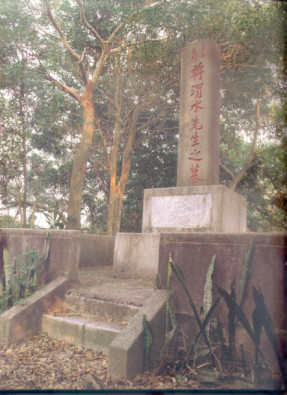 一、「熱血男兒」： 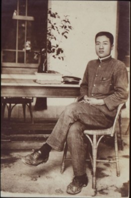 在校期間，蔣渭水不僅是一名成績優異的學生，同時也善於領導校內外同學，從事具有民族意識的反抗行動。他曾聯合各校學生在校外聚會，凝聚民族意識，甚至與翁俊明、杜聰明等同學，擬定以細菌刺殺袁世凱的計劃。此外，蔣氏也在課餘經營東瀛商會與冰店做掩護，作為同志謀事論政的據點。此時的蔣渭水，可說是身兼學生、商人，與民族運動者等三種角色。 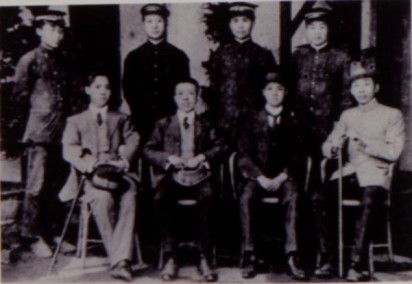 這段時間，可說是養成其革命性格的重要時期。蔣渭水逝世後，同志與報章輿論稱他為「一代熱血男兒」，便充分反映他重信義、富感情，帶有青年熱誠的理想性格；這種性格的養成，便與此時的歷練有關。 以總平均第二名的成績畢業後，1916年蔣渭水在大稻埕開設大安醫院(今延平北路二段的義美食品)，同時兼營春風得意樓。選擇在臺北發展，原有結交天下豪傑之意，然而此時的蔣渭水，主要仍是作為一個受歡迎的醫生，而非積極的政治運動者。 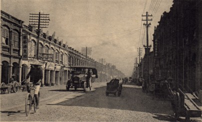 二、「文化頭」： 1.臺灣文化協會 1920年代臺灣的民族運動，是受到世界整體局勢的影響而興起。一次大戰後，美國總統威爾遜所提出的「民族自決」主張，鼓舞了全世界被壓迫的弱小民族。在東京的臺灣留學生，自然也受到此種思潮，以及中國辛亥革命、朝鮮三一事件的影響，乃先後成立啟發會、新民會等組織，並創辦了《臺灣青年》、《臺灣》等刊物。蔣渭水是《臺灣》雜誌的董事也是執筆的作家，《臺灣》雜誌在臺灣的支部就設在他開設的大安醫院。蔣渭水最早的兩篇文章──〈動搖時代的臺灣〉、〈廣義的衛生講話〉，便是在《臺灣》發表。 1920年，蔣渭水設立文化公司，購入文化、思想方面的圖書報刊以供研究。隔年春天，他經人介紹，結識了正在從事議會請願運動的林獻堂，林獻堂主導的議會請願運動，被蔣渭水認為是此時「臺灣人唯一的活路」；蔣渭水成立的新臺灣聯盟(臺灣第一個政治結社)、臺灣議會期成同盟會，都是響應的團體，他本人亦曾二次擔任代表赴日請願。 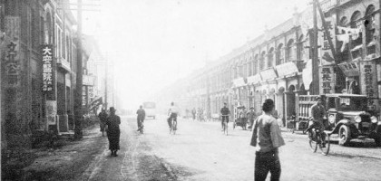 1921年十月，在李應章、林麗明、吳海水等人的促擁下，蔣渭水在大安醫院創立了臺灣文化協會，蔣渭水被推為專務理事，林獻堂被邀出任總理，並於大稻埕的靜修女中舉行成立大會。蔣渭水曾描述文化協會的創辦動機： 臺灣人現時有病了。……我診斷的結果，臺灣人所患的病，是智識的營養不良症，除非服下智識的營養品，是萬萬不能治癒的，文化運動是對這病唯一的原因療法，文化協會，就是專門講究並施行原因療法的機關。 如同成立的〈旨趣書〉中所揭示的，文化協會不僅要「謀臺灣文化向上發達」，更要「振興教育，獎勵體育，涵養藝術趣味」，啟蒙臺灣民眾的文化與教育。相對於總督府的政治壓迫、經濟剝削，蔣渭水為文化協會勾勒的使命，更著眼於反制日本對臺灣的文化消滅與同化。因此，他強調原屬漢民族、現為日本治下的臺灣人，「握著世界和平第ㄧ關門的鑰匙，並負有達成日華親善、謀求世界和平的使命」。 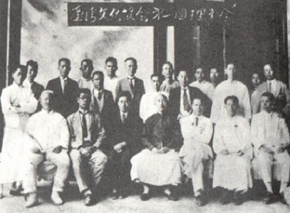 在文化協會第一期的《會報》上，蔣渭水發表了著名的〈臨床講義－關於名為臺灣的病人〉一文。在這篇堪稱近代臺灣啟蒙思潮中最具代表性的文獻中，蔣渭水將臺灣比喻為患者；明鄭時代，原是他身手矯健、品行高尚的幼年時期，但自清代以來，卻受政策毒害，變得身體衰落、意志消沉，成為「世界文化的低能兒」。蔣渭水認為，臺灣文化的病因是「智識的營養不良」，因此，他給臺灣開出正規學校教育、補習教育、幼稚園、圖書館、讀報社等五味藥方。 此後文化協會的工作，便大致以蔣渭水開出的處方為主軸。讀報社是文化協會初期用力最深的工作，全島共設有13處讀報社，其中12處是在蔣渭水任專務理事時設置的。蔣渭水也籌辦「講習會」以啟迪民智，邀請連雅堂主講臺灣通史，蔡式榖主講通俗法律，蔣渭水本人主講通俗衛生；學術講習會則邀請林茂生等人主講西洋史，另外尚有戲劇改良、經濟學、英語等課程。夏季學校更是對總督府不准臺灣人辦學，採內(日)臺二元教育的抗議，其師生互動的自由學風，在當時教師兼警察的臺灣教育界，可說是開風氣之先。 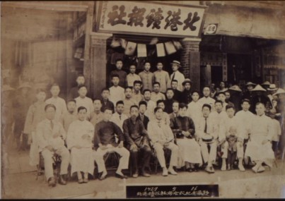 在總督府的殖民教育下，講習會無疑是臺灣人文化啟蒙、接受新知的重要窗口。講座舉辦時，雖受日人監視干擾，講者仍孜孜不倦，聽者亦風雨無阻；蔣渭水演講時，當局甚至須動員幾十名警察臨監，足見其號召力。 根據總督府的統計，文化講演聽眾每年達一萬人次，最盛的1927年，甚至超過十萬人次。1923年開始，文化協會以機動性的文化演講巡迴全島，後期更將運動層面擴展至文化劇(戲劇)、美臺團(電影)等藝術活動，引發了臺灣人高漲的民族意識。這是臺灣歷史上第一次由知識份子發起的啟蒙運動，由於蔣渭水在文化協會所扮演的領導角色，甚至連監獄中的流氓，都直稱他為「文化頭的蔣渭水」。 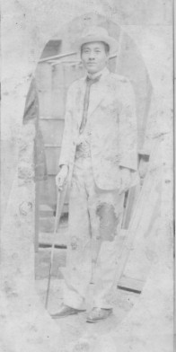 蔣渭水的入獄，可說是他從事反對運動的必修課程。在投身政治社會運動前，他既非留學生，亦無參訪先進國的經驗，更缺乏政治教育的背景。但十年之間，他所以能由一介平民變成一位歷史人物，不僅有實踐的體驗，更有學理的探討，而在歷練的過程上，監牢服刑也成為他心智鍛鍊最豐富的營養品。 1923年，蔣渭水因率領一群青年，高舉歡迎旗牌，假裝迎接日皇太子，實際從事臺灣議會設置請願的事件被拘留，成為「臺人因公事被檢束的第一人」。從此以後，只要有日本的皇親國戚或要員蒞臺，蔣渭水就會先被檢束，請進警署吃免費的牢飯。同年12月，蔣渭水成立的臺灣議會期成同盟會，被總督府以違反治安警察法為由，對會員展開大規模的全島性檢舉，結果共有41人被收押，58人被搜索或傳訊，是為轟動一時的「治警事件」；其中的「五人答辯」，更儼然代表著當時「先覺者」的磅礡之氣。 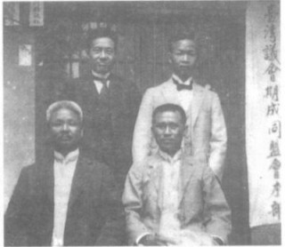 「治警事件」的判決中，蔣渭水的刑期最長，二次入獄共長達144天。在獄中他遍覽群書，不僅滿足了他夢想赴早稻田大學深造的求知慾，也為日後的文化演講，完成了思想武裝。蔣渭水出獄後的講題如「法蘭西革命史」、「明治之文化」、「政治哲學概論」、「群眾運動之基礎」、「社會病」等，其內容已由文化問題，擴大至社會政治問題。 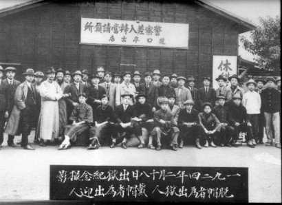 蔣渭水在獄中書寫了大量文章。一部分以仿古文的文體書寫，可看出其豁達的民族氣節；另一部份受答辯過程的影響，對時政的批判頗為犀利。最特別的是，描寫監獄生活的多篇文章，呈現了貧苦民眾的一面。他不僅與共享牢飯的鱸鰻(流氓)結成好友，也同情被環境逼為娼妓的少女。由觀察黑牢裡最底層民眾來思考、評論社會政治問題的行動，是此時期所有入獄的知識菁英中所未見的；這些表現人道主義胸懷的報導文學，亦為臺灣反對運動史上監獄文學之濫觴。 出獄後，蔣渭水投入《臺灣民報》創刊五週年紀念專號的籌備工作。1920年代臺灣人意識最重要的公共論域，便是經由《臺灣青年》、《臺灣》到《臺灣民報》而逐漸發展成形，《臺灣民報》由東京遷回臺灣發行後，以大安醫院為發行所，蔣渭水便成為此時《臺灣民報》的「褓母」。 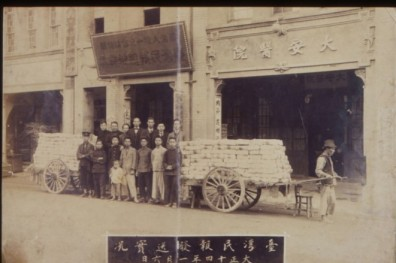 到他逝世之前，蔣渭水遭檢束入獄如家常便飯，監獄被他戲稱為渡假的「別莊」、「社會問題的研究所」。治警事件不僅使蔣渭水提昇智識的深度與廣度，面對不義時所展現的氣節，答辯過程中對臺灣民族定位的堅持，也塑造了蔣渭水在文化社會運動的歷史地位。 三、「政治社會運動第一指導者」： 民眾黨時期(1927-1931) 1.大時代風暴的衝激 治警事件期間(1923-1925年)，恰好是國際間民族自決的思潮最為澎湃之時。1922年，列寧在第三國際會議提出聯合全世界殖民地弱小民族，對抗帝國主義的主張。中國的孫中山亦受到列寧影響，而在1924年以「聯俄容共、扶助農工」改組國民黨；1925年的日本，則開始實行全民普選制度，勞農黨等無產政黨紛紛成立。這股由蘇俄吹起、遍及中國、日本的思潮席捲了整個亞洲，臺灣自然難以置身其外。 1925年6月，台中州二林等四庄，成立「蔗農組合總會」，提出與會社協商收購價格的要求，但會社卻陪同警察強行割刈甘蔗，乃發生衝突，導致蔗農及組合幹部四百多人被捕，25人被判有罪，這就是有名的「二林事件」。二林事件不僅促成農民運動的快速興起，並組成全島性的「臺灣農民組合」，成為農民運動的重要里程碑。 受到農民運動的衝激，沉默的臺灣工界也漸漸震動，各工友會的組織先後成立。1927年4月3日，高雄工人組織「臺灣機械工友會」，選舉「臺灣鐵工所」職工王風當會長，遭資方開除。鐵工所工人一起罷工，資方一律革職，激起全島28個工場的同情罷工，導致各地工人團體雨後春筍般相繼出現，使勞工運動呈現澎湃的氣勢。這就是有名的「臺灣鐵工所事件」。 在臺灣的政治社會運動邁入全民運動，形成和文化協會初期大不相同的新情勢，及農民運動的愈趨國際化與階級化，新文協也愈趨國際化，身處在這浪潮中的蔣渭水，一貫堅持他在文化書局開業啟事所提出的從「中國名著」及日本的「勞農諸書」兩大方向，為臺灣政治社會運動尋找出路，並喊出臺灣近代社會運動史上最響亮、最深入人心的口號－－「同胞須團結，團結真有力」。 2.創黨歷程與理念 文化協會改組後，舊幹部遂萌生另組政治結社的想法。1927年二月，蔣渭水提出「臺灣自治會」綱領，後因主張自治主義而被禁止，蔣渭水再改名為「臺灣同盟會」，但仍不被當局許可。同年五月，蔣渭水再以原案為基礎籌畫新組織，將綱領改為「期實現臺灣人全體之政治的、經濟的、社會的解放」，並更名為「臺灣民黨」。 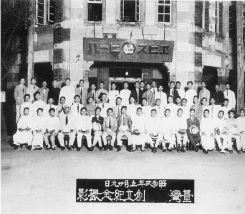 臺灣民黨雖已刪除敏感的自治主義綱領，但「臺灣人全體」與「解放」等字眼，仍被當局認定是民族主義團體而直接禁止。儘管屢試屢敗，蔣渭水卻沒有氣餒，隨後又提出「臺灣民眾黨」的提案，三項綱領為「確立民本政治、建設合理的經濟組織、改除不合理的社會制度」，總督府對此無異議，卻提出「蔣渭水不可參加」的最後條件。 依總督府看來，主張殖民地民族自治的團體是不可容忍的，而蔣渭水正是一個「極端的民族主義者」，因此只要是他參加的團體都難得許可。臺灣民眾黨若要成立，除非蔣渭水不參加、或保證蔣渭水不支配黨之大勢，並聲明黨為不奉民族主義的團體，方能成立。「蔣君參加問題」雖在民眾黨內引起爭論，但因民眾黨的籌備、規劃均由蔣渭水一手促成，大會仍通過蔣渭水的入黨，且被選為中央執行、中央常務委員，主掌財務部。 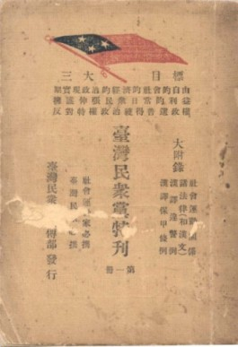 蔣渭水其後又以實質領導者的身份陸續發表〈臺灣民眾黨的指導原理與工作〉、〈請大家合力來建設一個堅固有力的黨〉、〈臺灣民眾黨的特質〉、〈民眾第一主義〉等文章，釐清民眾黨的工作與實踐方針。在〈臺灣民眾黨的指導原理與工作〉一文中，蔣渭水重申民眾黨的全民運動，是結合農工商學界與青年、婦女的路線。在他看來，民眾黨的特質中，以農工階級為中心的全民運動，不僅可預防保守妥協的老衰症，亦可避免躁進盲動的小兒病。此種「把持理想、凝視現實」的主張，目標是要造成「黨是臺灣人解放運動的總機關，如像中國國民黨是中國人解放運動的總機關一樣」。 3.臺灣民眾黨的深耕 民眾黨成立後的第二年(1928年)，便決議召集全島巡迴演講隊，實踐蔣渭水「到民眾裡去」的理念。他提倡的「民眾第一主義」，是將黨的力量根植於民眾，「喚醒民眾、組織民眾、訓練民眾」。演講隊的題目，包括「援助農工運動及社會團體之發達」、「要求學制之改革」、「要求改善警察制度」等。為達成這個理想，蔣渭水也身先士卒，親赴各地主講「民眾黨之綱領政策與工作」。 此後臺灣民眾黨陸續推動下列主張：保甲撤廢、地方自治促進革新、反對始政紀念日、反對總督府評議新任命、發表反對日本對華政策聲明。在作法上，民眾黨或以講演會與民眾大會，痛斥日治當局的暴政；或以電報、建議書、請願書等形式，向國際單位表達民意，並揭發當局對臺人的壓迫。另外，民眾黨亦在群眾之中組織各種團體，灌輸民眾政治教育。 依據「扶助農工團體之發達」的指導原理，1928年，民眾黨決定成立「臺灣工友總聯盟」，蔣渭水出任聯盟的顧問，他自稱是工總的「產婆」，亦可說是工總的隱形指導者。工總發展為共有四十多個團體成員，會員超過萬人，當時與臺灣民眾黨並列為四大社會運動主力之一，是當時臺灣最具影響力的工人組織。當時受民眾黨指導的青年、勞農、婦女團體共有48個，因此，蔣渭水也被時人奉為「政治社會運動第一指導者」。 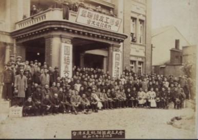 1929年1月，總督府公佈〈臺灣阿片令施行細則〉；12月，警務局長發表新特許方針的聲明書。民眾黨向來提倡阿片(鴉片)絕對禁止主義，總督府此舉，便被認定為殘害臺灣人身心的愚民政策。因此，民眾黨隨即要求警務局長取消特許令，同時致電總理大臣與拓務大臣，並向日本各報社要求刊載反對聲明。1930年一月，蔣渭水更直接致電日內瓦的國際聯盟，國聯隨即覆電並決定派員來臺調查。至此，臺灣的阿片問題一躍成為國際問題。 這個消息見諸報端後，隨即引起日本朝野上下的震動，總督府對致電國聯的蔣渭水更為不滿，國聯成員於臺中鐵路飯店接見民眾黨代表時，總督府甚至託林獻堂力勸蔣渭水不要前往，足見當局對蔣渭水的忌憚。此外，同年的霧社事件發生後，總督府刻意封鎖使用毒瓦斯屠殺原住民的消息，然卻經民眾黨的揭發，將霧社事件移到日本中央政界，演變成日本內閣的政治問題。阿片問題與霧社事件，均刺痛日治當局的暴政，也令總督府視蔣渭水及民眾黨為不除不快的眼中釘。 4.「臺灣人之救主」的殞落 隨著民眾黨活動的大眾化、組織化、革命化與國際化，以及蔣渭水徹底、不妥協的領導特質，使日治當局更加忌憚這種「真劍的(認真、積極)民族解放運動」。1931年2月18日，在民眾黨第四次全島黨員大會通過新綱領修正案後，日治當局唯恐民眾黨撼動其施政，便突然包圍會場宣佈禁止令，並逮捕蔣渭水等重要幹部。 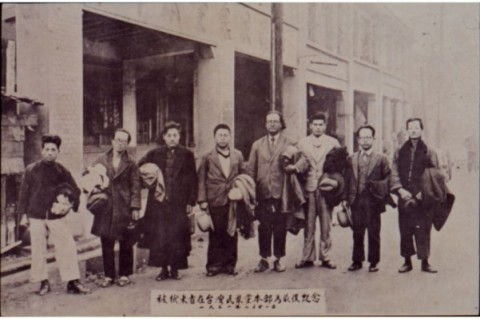 民眾黨被解散後，蔣渭水發表聲明稱「這次的解散，委實是榮譽的戰死」，御用報紙稱禁止令是總督府對阿片問題與霧社事件的報復手段，這證明了「民眾黨確有力量揭發總督府的專制」。他也認為，若依著總督府容許的範圍重新組黨，便無再組黨的必要，「因為我們所要的黨，政府要禁止；而政府所容許的黨，已被抽筋抽骨僅剩個空皮的政黨。」現在需要的，是將黨的力量深入各個不同階級團體，「全力組織訓練農工大眾」「組成堅固有力的農工同盟」。 民眾黨解散後，蔣渭水仍積極參與《臺灣新民報》上的論戰，不久即因感染傷寒症而於同年的八月五日清晨離世。 蔣渭水逝世後第三天，《臺灣新民報》刊出了多位同志的悼詞。林獻堂哀詞中追憶自文化協會起，與蔣渭水共同奮鬥的歷程；楊肇嘉〈悼渭水兄逝世〉一文，則最能看出另組自治聯盟人士對蔣渭水逝世的複雜感受。文中楊肇嘉除了表白悲哀、愁嘆的感受及「另有一份莫可如何的苦痛」之外，讚許蔣渭水是擁有「徹底的性質和不妥協的精神」的社會運動家，而具有這兩項最要緊的條件的人實在很少。 《經世新報》稱許「熱血男兒，渭水之後更無渭水其人」；日本人經營的《新高新報》，也刊出以「臺灣人之救主」為標題的文章，足見日人亦無法否認蔣渭水在臺灣人心中的地位。蔣渭水的告別式，於八月廿三日舉行「大眾葬」，共有五千餘人參加，骨灰葬於大直山。 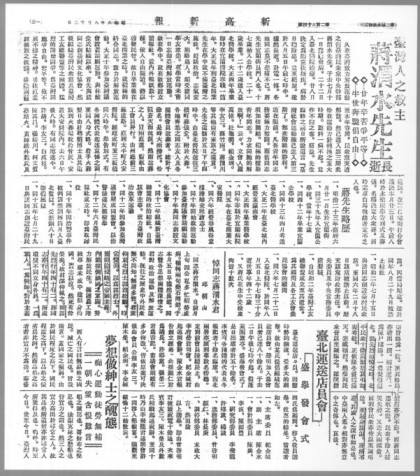 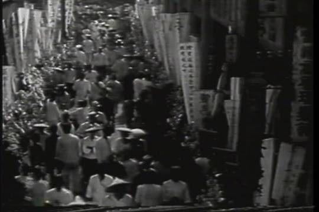
|